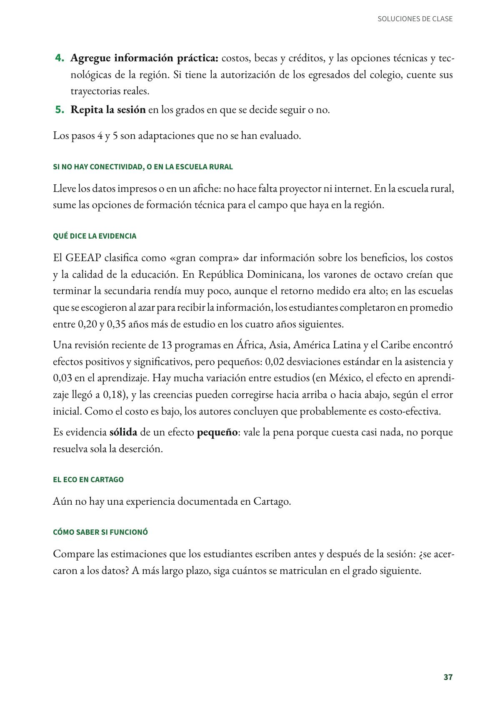
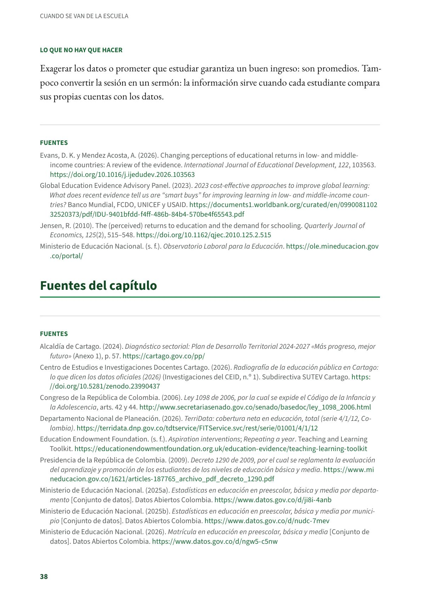

Mostrar con datos lo que vale estudiar: información sobre los retornos de la educación
Los estudiantes deciden si siguen estudiando según lo que creen que vale estudiar, y esas creencias pueden estar lejos de los datos. Estudiantes de secundaria (en el estudio de República Dominicana, de octavo). Evidencia sólida.
PDF · 3 págs. · 70 KBEn resumen
- Evidencia: sólida.
- Para quién: Estudiantes de secundaria (en el estudio de República Dominicana, de octavo). Conviene en los grados en que se decide seguir o no, como 9.º y 11.º.
- Tiempo: Una sesión de una clase, que se puede repetir en los grados de transición.
- Materiales: Datos oficiales de ingresos y empleo de los graduados, en el tablero o en un afiche.
- De dónde viene: República Dominicana y otros países de ingreso bajo y medio. El GEEAP la clasifica como «gran compra».
Qué es
Los estudiantes deciden si siguen estudiando según lo que creen que vale estudiar, y esas creencias pueden estar lejos de los datos. Esta solución les da información real sobre ingresos y empleo para que decidan con mejores cuentas. Su efecto es pequeño, pero cuesta casi nada.
Paso a paso en el aula
- Pregunte primero. «¿Cuánto crees que gana al mes una persona recién graduada de un programa técnico, tecnológico o profesional? ¿Cuántos de cada 100 consiguen un empleo formal?». Cada estudiante escribe su estimación.
- Muestre los datos. El Observatorio Laboral para la Educación, del Ministerio de Educación, publica el ingreso y la tasa de cotizantes (quienes tienen empleo formal) de los graduados de la educación superior, por programa y por institución. Prepare antes una tabla sencilla con los programas que ofrecen las instituciones cercanas.
- Comparen. ¿Qué tan lejos estaban las estimaciones? Converse con el curso sin exagerar: son promedios, no promesas.
- Agregue información práctica: costos, becas y créditos, y las opciones técnicas y tecnológicas de la región. Si tiene la autorización de los egresados del colegio, cuente sus trayectorias reales.
- Repita la sesión en los grados en que se decide seguir o no.
Los pasos 4 y 5 son adaptaciones que no se han evaluado.
Si no hay conectividad, o en la escuela rural
Lleve los datos impresos o en un afiche: no hace falta proyector ni internet. En la escuela rural, sume las opciones de formación técnica para el campo que haya en la región.
Qué dice la evidencia
El GEEAP clasifica como «gran compra» dar información sobre los beneficios, los costos y la calidad de la educación. En República Dominicana, los varones de octavo creían que terminar la secundaria rendía muy poco, aunque el retorno medido era alto; en las escuelas que se escogieron al azar para recibir la información, los estudiantes completaron en promedio entre 0,20 y 0,35 años más de estudio en los cuatro años siguientes.
Una revisión reciente de 13 programas en África, Asia, América Latina y el Caribe encontró efectos positivos y significativos, pero pequeños: 0,02 desviaciones estándar en la asistencia y 0,03 en el aprendizaje. Hay mucha variación entre estudios (en México, el efecto en aprendizaje llegó a 0,18), y las creencias pueden corregirse hacia arriba o hacia abajo, según el error inicial. Como el costo es bajo, los autores concluyen que probablemente es costo-efectiva.
Es evidencia sólida de un efecto pequeño: vale la pena porque cuesta casi nada, no porque resuelva sola la deserción.
El eco en Cartago
Aún no hay una experiencia documentada en Cartago.
Cómo saber si funcionó
Compare las estimaciones que los estudiantes escriben antes y después de la sesión: ¿se acercaron a los datos? A más largo plazo, siga cuántos se matriculan en el grado siguiente.
Lo que no hay que hacer
Exagerar los datos o prometer que estudiar garantiza un buen ingreso: son promedios. Tampoco convertir la sesión en un sermón: la información sirve cuando cada estudiante compara sus propias cuentas con los datos.
Fuentes
Evans, D. K. y Mendez Acosta, A. (2026). Changing perceptions of educational returns in low- and middle-income countries: A review of the evidence. International Journal of Educational Development, 122, 103563. doi.org
Global Education Evidence Advisory Panel. (2023). 2023 cost-effective approaches to improve global learning: What does recent evidence tell us are “smart buys” for improving learning in low- and middle-income countries? Banco Mundial, FCDO, UNICEF y USAID. documents1.worldbank.org
Jensen, R. (2010). The (perceived) returns to education and the demand for schooling. Quarterly Journal of Economics, 125(2), 515–548. doi.org
Ministerio de Educación Nacional. (s. f.). Observatorio Laboral para la Educación. ole.mineducacion.gov.co
Así se ve en el libro
3 páginas

